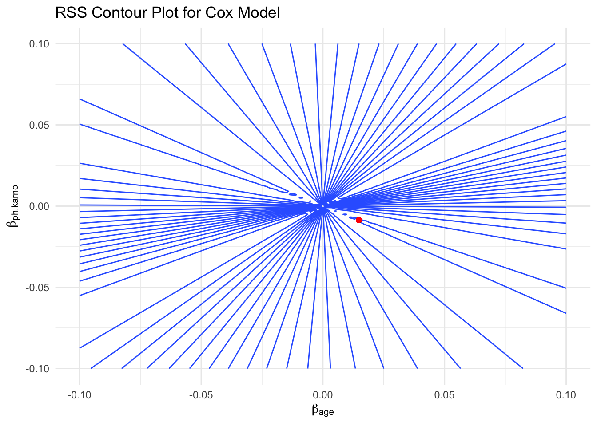

outlier: y strange; high leverage points: x strange When doing regression, removing the high leverage observations has a much more substantial impact on the least squares line than removing the outlier.(why?) for linear regression, use \(h_i=1/n + (x_i-\bar x)^2/ \Sigma(x_i-\bar x)^2\)to quantify the leverage statistic, if it is greatly exceeds (p+1)/n(because there is p+1 parameters to estimate), the cooresponding point may have high levegage
Philosophy Behind Average Leverage and Trace of the Hat Matrix(projection matrix)
Projection and Influence: Linear regression can be viewed as a projection of data onto a subspace defined by the predictors, with the hat matrix encapsulating this projection.
Degrees of Freedom: The rank of the design matrix, corresponding to the number of predictors plus one (for the intercept), represents the total degrees of freedom available for fitting the model.
Trace as a Measure of Complexity: The trace of the hat matrix(for linear regression it is p+1), equal to ( p + 1 ), distributes the total influence across the observations, reflecting how each data point contributes to the model.
Balance and Diagnostics: Understanding leverage and its average value helps diagnose the balance between model complexity and fit, ensuring that the model is neither too simple nor overfitted.
colinearity
In an RSS contour plot, if the contours take on an elliptical shape, it typically indicates that the two regression coefficients are collinear. Here is a detailed explanation of the relationship between elliptical shapes and collinearity:
Elliptical Shapes and Collinearity Definition of Collinearity:
Collinearity refers to the phenomenon where two or more predictor variables (independent variables) are highly linearly correlated. When predictor variables are highly correlated, the coefficient estimates in the regression model become unstable and imprecise.
Meaning of Elliptical Shapes in Contour Plots:
When two predictor variables are collinear, the contours in the Residual Sum of Squares (RSS) contour plot form an elliptical shape. This is because a small adjustment to one coefficient can be offset by adjusting the other coefficient, thereby maintaining the same RSS value.
The major axis of the ellipse represents the direction of the linear relationship between the two variables. Changes along this direction have a smaller impact on the RSS, while changes along the minor axis have a larger impact.
Illustrative Understanding:
If the contours are circular, it indicates that there is no significant linear relationship between the two coefficients. If the contours are elongated ellipses, it indicates that there is a significant linear relationship between the two coefficients, i.e., collinearity. eg. of linear regresssion
library(ggplot2)library(dplyr)
Attaching package: 'dplyr'
The following objects are masked from 'package:stats':
filter, lag
The following objects are masked from 'package:base':
intersect, setdiff, setequal, union
library(survival)library(ggplot2)library(dplyr)# Use the lung dataset from the survival packagedata(lung)
Warning in data(lung): data set 'lung' not found
train_df <- lung# Check for missing values and remove rows with missing valuestrain_df <- train_df %>%na.omit()# Select variables of interesttrain_df <- train_df %>%select(age, ph.karno, time, status) %>%mutate(status =ifelse(status ==2, 1, 0)) # Convert status variable to binary (1 = event, 0 = censored)# Prepare the survival objecty <-Surv(train_df$time, train_df$status)# Fit the Cox model using the Breslow methodcox_model <-coxph(y ~ age + ph.karno, data = train_df, method ="breslow")# Define a function to calculate RSS for given coefficientscalc_rss <-function(beta_age, beta_ph_karno) { train_df$linear_pred <- beta_age * train_df$age + beta_ph_karno * train_df$ph.karno cox_model_temp <-coxph(y ~ linear_pred, data = train_df, method ="breslow")return(-2*logLik(cox_model_temp))}# Generate a grid of beta values for age and ph.karnobeta_age_seq <-seq(-0.1, 0.1, length.out =100)beta_ph_karno_seq <-seq(-0.1, 0.1, length.out =100)rss_values <-outer(beta_age_seq, beta_ph_karno_seq, Vectorize(calc_rss))# Create a data frame for plottingrss_df <-expand.grid(beta_age = beta_age_seq, beta_ph_karno = beta_ph_karno_seq)rss_df$rss <-as.vector(rss_values)# Plot the RSS contour plotp <-ggplot(rss_df, aes(x = beta_age, y = beta_ph_karno, z = rss)) +geom_contour(aes(z = rss), bins =20) +geom_point(aes(x =coef(cox_model)["age"], y =coef(cox_model)["ph.karno"]), color ="red") +labs(title ="RSS Contour Plot for Cox Model",x =expression(beta[age]),y =expression(beta[ph.karno])) +theme_minimal()print(p)

Resampling methods
it is a trade-off of bias and variance that is a imporatance here.
cross-validation
Use the data we have had to conduct both training and testing.
Drawbacks: waste power of the information so we overestimate the MSE. random results
LOOCV
Leave one out cross validation makes up the drawbacks of cv by using the whole data information and the result stays the same by calculate average MSE, which is \[1/n \Sigma(y_i-\hat y_i/1-h_i)^2\]
\(h_i\) is the leverage which indicates the influence of an observation on its own fit. In this formula, when \(h_i\) goes higher, the observation has a high power on itself so that it punishes the residual(Since high leverage points have a significant influence on the model, their errors might be underestimated if no adjustments are made. If a particular observation has an extreme influence on the model, according to this formula, its error will be greatly amplified to emphasize its importance in model fitting. This adjustment helps prevent the model from relying too heavily on specific high leverage points, thereby improving the model’s generalization ability.), the formula (residual) goes higher.
Drawbacks of LOOCV: does not shake up data enough because the training data is nearly same and so that correlated. To avoid their average’s high variance casued by it, small K may be good but it will lead a biased average because of not big enough training set as the original set.
So choosing K=5 or 10 is a bias-variance tradeoff. ### K-fold
also use average MSE as CV
for classification problem
LOOCV:
\[1/n\Sigma (Error_i) \] K-fold:
\[\Sigma n_k/n (Error_k)\] (n_k is the number of a group and Error_k is the wrong number divided by the number of a group)
The estimated standard deviation of \(\Sigma n_k/n (Error_k)\)is given by:
$$ (CV_K) =
$$ but it is not valid enough because they are not independent.